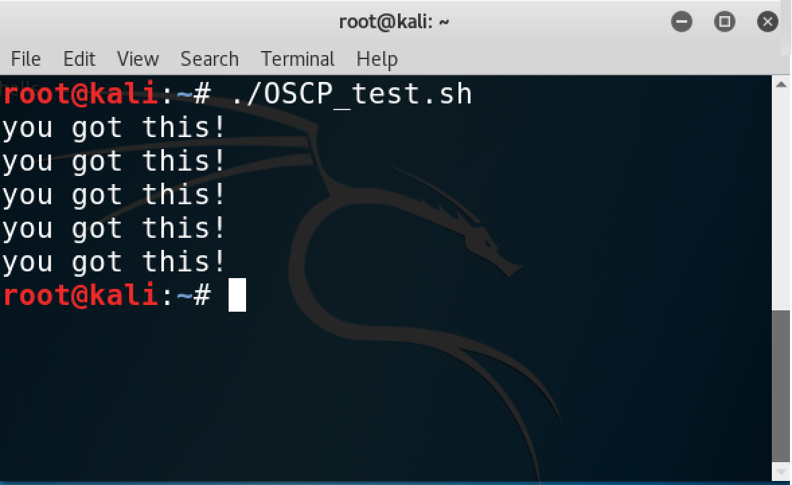

This site should help you prepare, and act as a handy reference guide during the test. The PWK test is a grueling 24 hour ordeal that will leave you physically and mentally drained, but if you're prepared, and are willing to try harder, you will come out on the other side, an OSCP certified Pentester.
